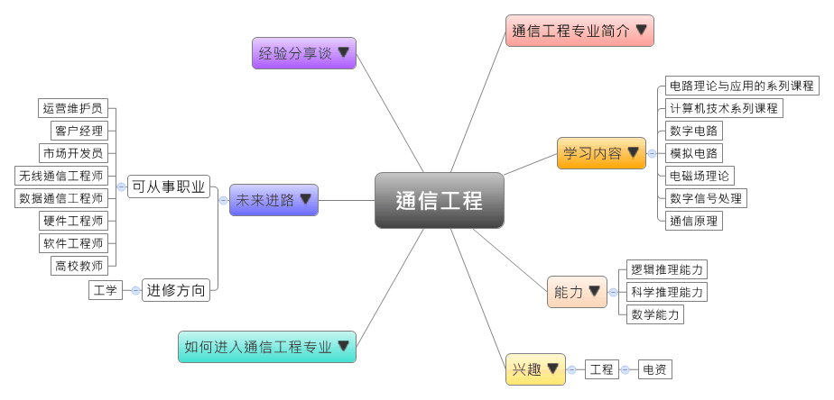
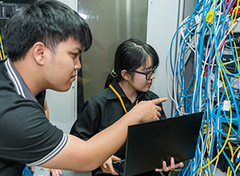

- 专业大观园
-

- 专业介绍
-
什么是通信工程专业？
通信工程，亦称为电信工程，是电子工程中重要且基础的学科。通信工程在信息科学技术领域发展迅速且极具活力，其关注通信过程中的信息传输和信号处理的应用，所涉及的范围包括电信、广播、电视、雷达、声呐、导航、遥感、电子对抗、测量、控制、军事与国防等领域。在职场上，由于科技发展快速且人才严重短缺，所以通信工程专业具有极广阔的发展前景。在生活中，我们使用手机进行微信、QQ 或收发电子邮件就是一种通信工程的生活应用。
通信工程专业训练学生具备通信工程的理论与知识，并通过通信技术、通信系统和互联网等实务训练，让学生具备全方位的通信工程能力，可以在各科技公司担任射频工程师、软/硬件工程师，以及测试工程师等。
 在通信实验室认识各种通信设备 
通信专业实习－维修通信仪器
- 学习内容
-
通信工程专业学生主要学习电子技术、通信理论，以及电子计算机等基本原理，除了学习关于通信传输与信息系统课程，也要学习关于编解码的信号与信息处理课程。学生在实务上须接受电子仪器设计、制作，以及模拟电路的专业训练。
本专业学习方向通常分为三类：电子科学与技术、信息与通讯工程、计算机科学与技术；其他学校也有开设通信原理实验或电子电路实验等课程，为学生未来就业做好准备。通信工程专业主干课程有：电路理论与应用的系列课程、计算机技术系列课程、数字电路、模拟电路、信号与系统、电磁场理论、数字系统与逻辑设计、数字信号处理、通信原理……等。此外，学生须加选一门以上的专业实验课程，如：计算机上机训练、电子工艺实习、电路综合实验、数字系统与逻辑设计实验、电磁场实验进行选修。
本专业可以习得的知识与获得之能力、技能列点：第一，掌握电路理论、数字系统等基本理论和知识，并具备电子技术、计算机技术等的实务设计与开发能力；第二，掌握光波、无线、多媒体等通信技术，并具有各类通讯系统和互联网的设计、开发、调整、应用等能力；第三，熟悉国内通信产业政策，并随时更新电子通信工程的最新发展动态。
- 能力
-
通信工程专业学生，需具备以下能力：
相关性向能力 说明 逻辑推理能力  能够提出假设并进行验证
能够提出假设并进行验证
拥有数据结构与数理逻辑能力科学推理能力 具备电子技术应用能力
拥有通信设备的科学研究能力
拥有计算机语言程序设计与开发的能力数学能力 具备数学推理与计算的能力
具备处理与分析数字信号的能力
- 兴趣
-
若你对下列活动或事物有高度兴趣，可考虑进入通信工程专业学习：
工程 电资 擅长进行数学与逻辑推理游戏
喜爱手机、计算机、平板等通信设备
对于亲手设计并制作电子产品很有兴趣
- 如何进入此专业
-
下面列举开设通信工程专业的211工程重点大学院校：
- 未来进路
-
可从事职业
通信工程专业学生毕业后就业面广，职业选择自主灵活。目前，从通信专业就业类型上说主要有软件和硬件两个大的方向。毕业生可以去运营商如移动，联通，电信等做运营维护工作；同时也可去设备商如华为、中兴、烽火、爱立信等公司，或是通信设备制造企业、电子信息类技术研发的相关科研院所从事技术研发工作；又或是可以去计算机公司做程序员。在工作职场上皆能发挥计算机的开发、通信系统应用能力等专长：
行业 职业 教育 高校教师 科学研究 通信工程研究员 信息传输、软件和
信息技术服务业
（运营商、设备商、
计算机公司）运营维护员、市场开发员、无线通信工程师、数据通信工程师、通信技术研发员、程序员、射频工程师、软/硬件工程师、测试工程师、网络工程师 进修方向以下列举通信工程专业毕业生可以继续修读之学科门类、一级学科与硕士点：
学科门类 一级学科 硕士点 工学 信息与通信工程通信与信息系统、信号与信息处理、信息安全、智能信息处理、多媒体信息处理与通信技术、移动互联网、空间信息系统、数字媒体创意工程 计算机科学与技术物联网技术、图像处理与科学可视化、教育信息技术、智能传感技术、数字媒体技术 工程（专业硕士）电子与通信工程、计算机技术、软件工程
- 经验分享谈
-
中国通信界元勋——张煦院士
在美留学4年，张煦一直是同学眼中的“拼命张郎”，他给自己立下“四不”原则——不抽烟、不饮酒、不打牌、不跳舞，还告诫自己“莫等闲，白了少年头，空悲切”，形成了他此后奉行一生的座右铭：“High Thinking, Low Living”，译为中文便是“勤奋思考，简单生活”。
1940年获得哈佛大学博士学位后，带着从美国学到的先进通信理论和技术，满怀报国之志的张煦回到祖国。一年后，他受聘前往母校交通大学任教，从此开启了一生科教事业的漫长旅程。回国之初，张煦将自己在美国求学期间形成的一套设计实验报告编纂成《电信网络设计》一书出版，供通信领域同仁学习参考。登上交大讲台，他主持讲授无线电工程、长途电话工程、无线电理论等课程，开创中国通信科教事业之先河。
年过花甲，张煦也从未停止对国外科技发展最新趋势的关注和引介。上世纪80年代，光纤通信在发达国家迅速兴起，张煦希望这一新技术能够尽早“为我所用”，他为研究生专门开设光纤通信原理课程，并很快编撰出版相关专着。张煦早年的学生评价说，张煦对新中国自行培养第一、第二代通信工作者有着不可磨灭的贡献。
在“科学赛道”上半个多世纪地奋力奔跑，张煦先后培养出近千名高级科研和教育人才，翻译、著述近900万字。1997年7月7日，香港《文汇报》曾整版刊登张煦的科研事迹和照片，被誉为“光纤之父”的诺贝尔奖获得者高锟曾评价说，张煦对中国通信技术的发展不遗余力，是当之无愧的“中国通信界元勋”。【资料来源：《中国科学报》 (2013-08-23 第6版 印刻) 张煦院士的“科学万米跑”.】